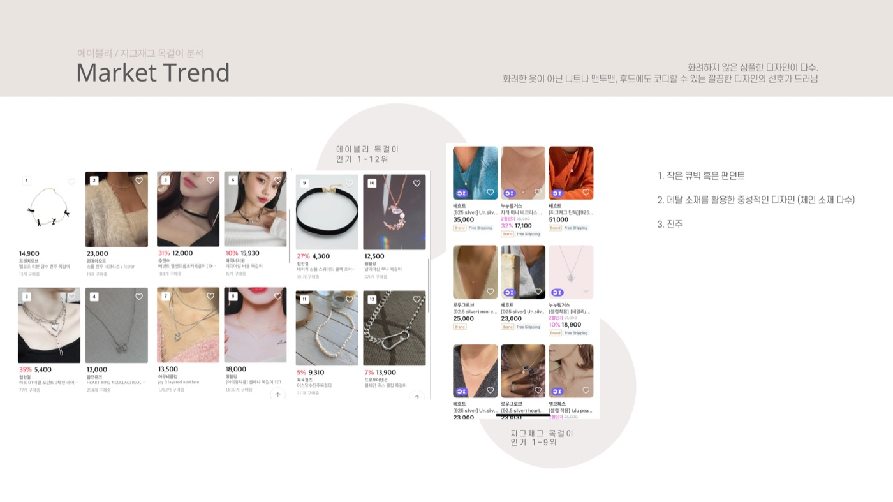
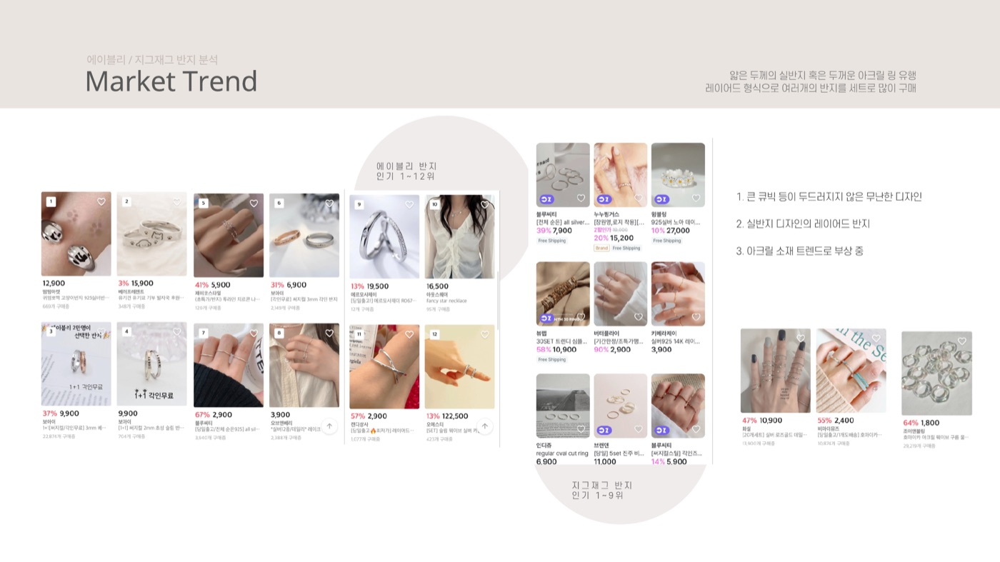
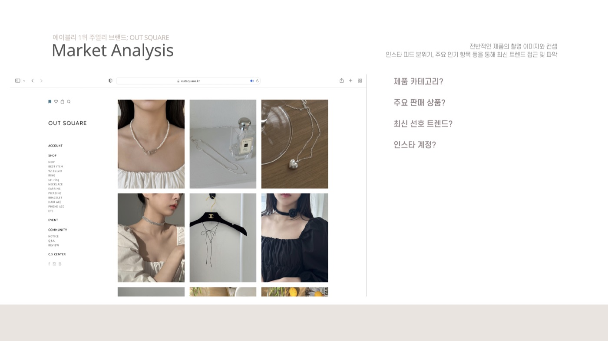
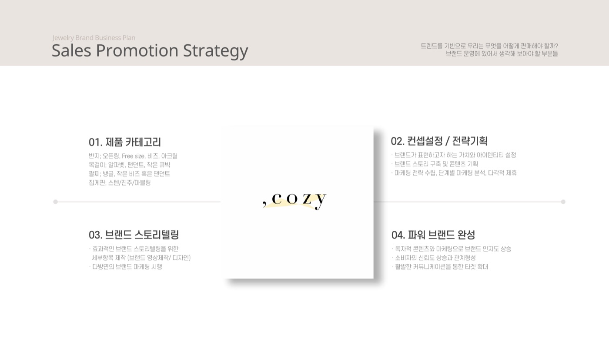
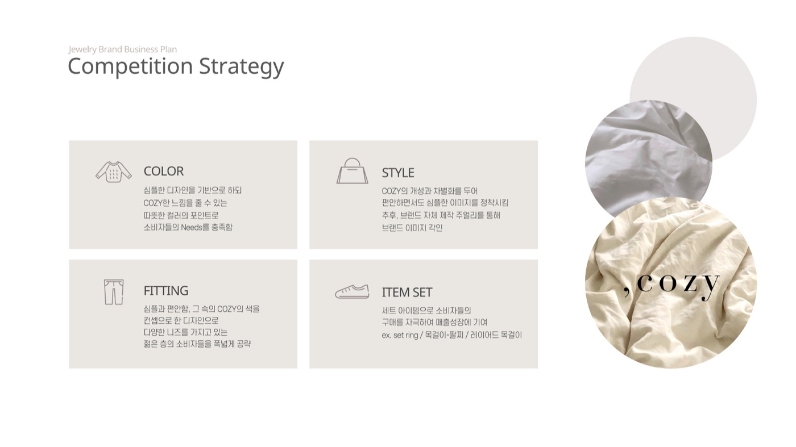
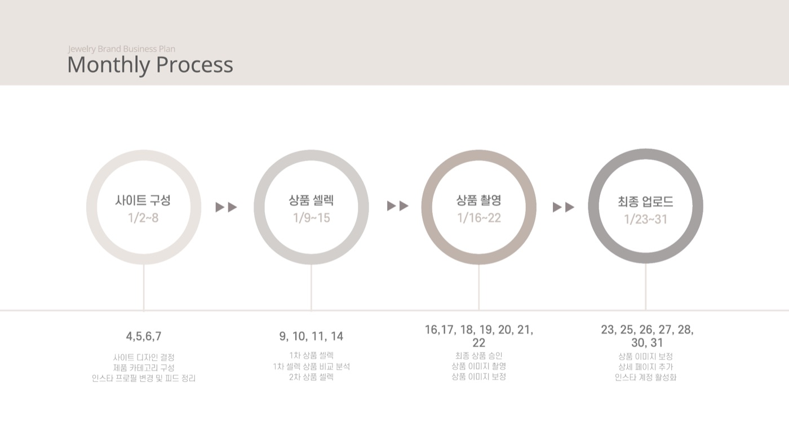
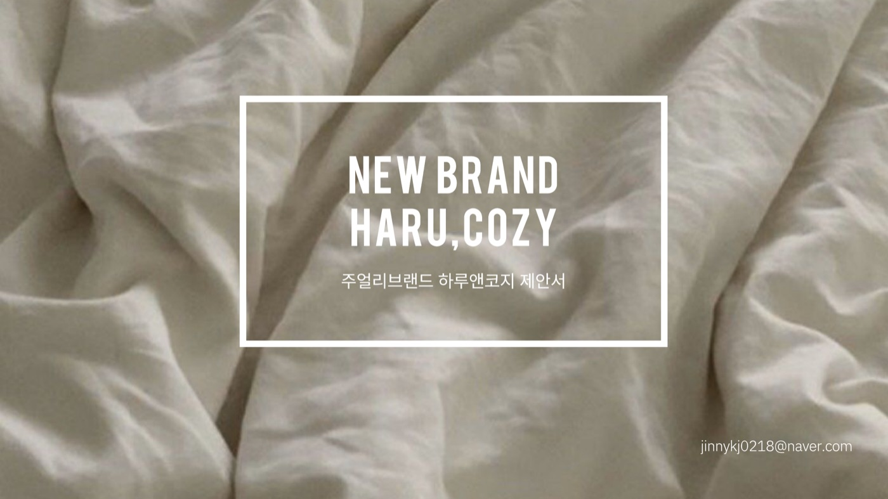

,cozy
문제
기존 브랜드 '하루'의 아이덴티티를 지키면서 주얼리라는 새 분야로 넓혀야 했습니다. 트렌드는 반영하되, 하루의 콘셉트와 분위기는 잃지 않아야 했습니다.
과정
시장부터 봤습니다
반지, 목걸이, 팔찌의 판매 상위 상품과 가격대를 모아 트렌드를 정리하고, 경쟁 브랜드의 상품 구성을 분석했습니다.



쉼표 하나로 이름을 지었습니다
Haru, 쉼표, cozy. 쉼표는 일상의 쉼표이자 하루의 흔적, cozy는 일상복에도 어울리는 편안함입니다. 로고는 하루 동안 해가 뜨고 지는 모습을 도형으로 담았습니다.

무엇을 어떻게 팔지 정했습니다
제품 카테고리, 콘셉트와 전략, 브랜드 스토리텔링을 판매 전략으로 묶고, 컬러, 스타일, 핏, 세트 아이템으로 경쟁 전략을 세웠습니다.


한 달 운영 흐름까지 그렸습니다
사이트 구성, 상품 셀렉, 상품 촬영, 최종 업로드로 이어지는 월간 프로세스를 날짜별로 잡았습니다.

해결
쉼표 하나에 '하루의 쉼'을 담은 이름과 로고, 판매 전략, 운영 일정까지 한 번에 제안했습니다.
